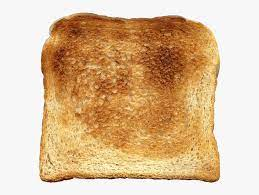

Toast

Description
Toast is sliced bread that has been browned by radiant heat.
The browning is the result of a Maillard reaction altering the flavor of the bread and making it firmer.
The firm surface is easier to spread toppings on and the warmth can help butter reach its melting point.
Ingredients
- Bread
- Butter
- Strawberry Jam
Steps
- Cooking Bread. Place toast in toaster.
- Select Temperature. Select temperature for desired crispiness.
- Cooking Bread. Push down toaster lever to begin toasting.
- Buttering Toast. After toast pops up remove from toaster, place on plate.
- Apply Butter and Enjoy!